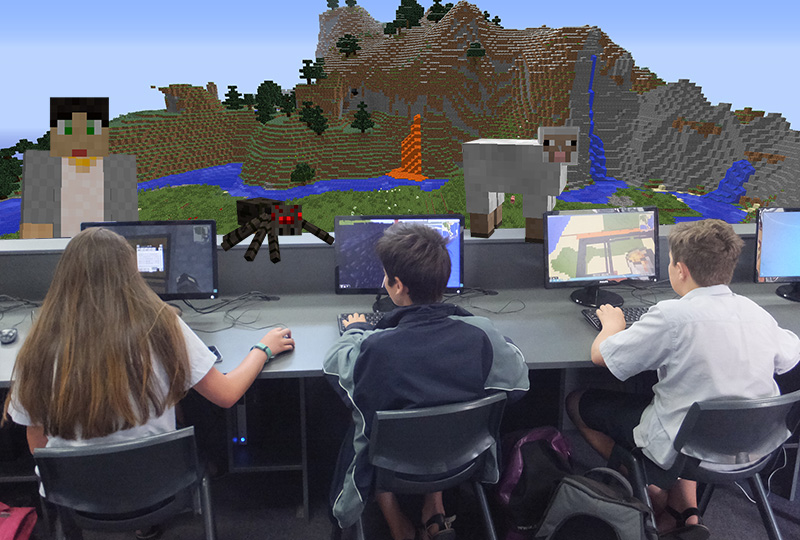

Engage Students in Fun New WaysEducators have told us that using Minecraft to teach part of their curriculum has helped them improve student engagement, collaboration, creative exploration, and tangible learning outcomes.Student EngagementMinecraft Education Edition brings the classroom and curriculum to students in an environment they are already comfortable with. It offers the same Minecraft experience many students enjoy already, but with some additional capabilities that enable them to collaborate in the classroom, as well as support for educators to deliver learning activities within the game. |

|
Navigation |